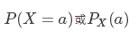
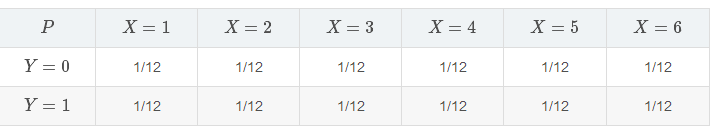
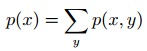
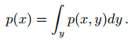
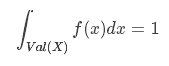
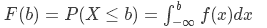
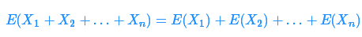
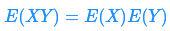
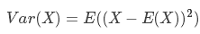
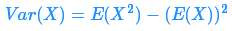

概率论¶
1. 基本概念¶
概率，通常指的是一个不确定事件发生的可能性。在机器学习和统计学中，有两个主要的流派：频率学派与贝叶斯学派。贝叶斯学派研究的是观察者对事物的看法，因此也称为主观概率；频率学派认为概率只能通过反复实验去逼近事件本身从而得到结果。频率学派试图描述的是事物本体，而贝叶斯学派试图描述的是观察者知识状态在新的观测发生后如何更新，描述的是观察这的对事物看法。
1.1 概率空间¶
1.1.1 定义¶
一个概率空间由三元组定义（Ω, F, P）：
状态空间/样本空间 Ω
指一个试验所有可能出现的结果，一般用 Ω 表示。例如，连续投掷两次硬币的状态空间是 {正正，反反，正反，反正}。
事件空间 F
试验的每一个单一的结果为一个事件，它是状态空间的子集，而事件空间就是所有事件构成的集合。
概率 P(A)
对于每一个单独的事件 A（属于F），我们可以将其与一个数字 P(A) 联系起来，P(A) 即描述了该事件发生的可能性，也称为概率函数。对于单个事件，其概率必定在 [0,1] 之间；状态空间内所有可能结果的概率之和必定为等于1.
举个例子来理解上述三个概念。假如我们投掷一个6面骰子，那么样本空间 Ω = {1,2,3,4,5,6}。如果我们关注的事件是骰子点数是奇数还是偶数，那么事件空间就是 F = {∅,{1,3,5},{2,4,6}}
1.1.2 概率法则¶
给定一个事件空间F，概率函数P需要满足几个法则：
- 对于F中任意一个事件，其概率 P 在 [0,1] 之间
- 整个事件空间的概率之和为1
- 如果两事件互斥（即两事件不可能同时发生），那么这两个事件其中有一个发生的概率等于各个事件发生的（边缘）概率之和。即：对于所有 α,β∈F 和 α∩β=∅,P(α∪β)=P(α)+P(β)
第三个法则也叫互斥事件的加法法则。例如，投掷点数为偶数的概率为：P({2,4,6})=P({2})+P({4})+P({6})=3/6
1.2 随机变量¶
关于随机变量，有两个重要的误解：它既不是随机的，也不是一个变量。 它指的是把样本空间中某个特定结果与其发生的概率值（数字）关联起来的映射关系，本质是一个函数 。通常用一个大写字母来表示随机变量。
从某种意义上说，随机变量让我们可以将事件空间的形式概念抽象出来，通过定义随机变量来采集相关事件。例如，考虑掷骰子中投掷点数为奇／偶的事件空间，可以定义一个随机变量，当结果为奇数时取值为1，否则随机变量取值为0。
取值为 a 的随机变量 X 的概率可以记为：
同时，随机变量 X 的取值范围记作：Val(X)。
根据状态空间的不同，随机变量可以分为离散的和连续的。比如，一次掷10个硬币，定义随机变量为有多少个硬币正面朝上，则该随机变量就是离散的，因为只能取有限多个值。相反，能取无限多个值的随机变量就是连续随机变量。
1.3 联合分布、边缘分布与条件分布¶
1.3.1 概率分布¶
概率分布，指的是随机变量取某一个特定值的概率，例如：假设在投掷一个骰子的样本空间 Ω 上定义一个随机变量 X，如果骰子是均匀的，则 X 的分布为： P(X=1) = P(X=2)...= P(X=6) = 1/6。 虽然这个例子形式上和事件发生的概率类似，但两者的语义不同：前者是指 某件具体事件发生的概率 ，而这里指的是一个 随机变量的概率分布 。我们用 P(X) 表示随机变量 X 的概率分布。
1.3.2 联合分布¶
联合分布指的就是由多于一个变量决定的概率分布，即多件事件同时发生的情况。例如，在投掷一个骰子的样本空间上定义一个随机变量 X。定义一个指示变量 Y，当抛硬币结果为正面朝上时取1，反面朝上时取0。假设骰子和硬币都是均匀的，则 X 和 Y 的联合分布如下：
一般用 P(X and Y) 或更简便的 P(X,Y) 来表示它们的联合分布。
1.3.3 边缘分布¶
边缘分布指的就是一个随机变量对于其自身的概率分布。简单的理解，就是一个事件自身发生的概率分布，而不考虑其他变量。换句话说，在联合分布的情境下，边缘分布就是把另一个变量的所有可能取值相加。之所以取名为边缘分布也是这个原因，它将联合分布中（假设是两个变量组成的联合分布）其中的一个变量相加，把结果写在边缘。
1.3.4 条件分布¶
条件分布是已知某（些）事件已经发生的前提下，另一（些）事件发生的概率的分布。正式地，给定 Y=b 时，X=a 的条件概率定义为：

假设我们已知一个骰子投出的点数为奇数，想要知道投出的点数为“1”的概率。令 X 为代表点数的随机变量， Y 为指示变量，当点数为奇数时取值为1，那么我们期望的概率可以写为：

条件概率的思想可以自然地扩展到一个随机变量的分布是以多个变量为条件时，即：

我们用 P(X|Y=b) 来表示当 Y=b 时随机变量 X 的分布，也可以用 P(X|Y) 来表示 X 的一系列分布，其中每一个都对应不同的 Y 可以取的值。
1.4 连接概率类型：加法法则与乘法法则¶
1.4.1 加法法则¶
加法法则用来连接联合分布与边缘分布，即
对于连续随机变量：
换言之，当有两个以上随机变量构成的联合分布时，加法法则可以应用到其中任意一个（或多个）随机变量，得到该变量的边缘分布。
1.4.2 乘法法则（链式法则）¶
乘法法则是一个连接联合分布与条件分布的等式，任何多元随机变量的联合分布，都可以分解成其他两个类型概率相乘的形式，其一是第一个随机变量的边缘分布，另一个是第二个随机变量的条件分布，即 P(X,Y) = P(X)P(Y|X)。推广到n个随机变量：

乘法法则通常用于计算多个随机变量的联合概率，特别是在变量之间相互为（条件）独立时会非常有用。注意，在使用乘法法则时，我们可以选择展开随机变量的顺序；选择正确的顺序通常可以让概率的计算变得更加简单。
1.4.3 贝叶斯定理¶
将加法法则与乘法法则结合在一起，就得到了我们的贝叶斯公式。首先，根据乘法法则 P(X,Y) = P(X)P(Y|X)，由于随机变量的顺序是人为设定的，所以交换顺序也成立： P(X,Y) = P(X)P(Y|X) = P(Y)P(X|Y)，两边同时除以P(Y)（假设不为0），就得到了贝叶斯定理：

2. 定义概率分布¶
之前提到过，根据状态空间的不同，随机变量可以是离散的（只能取有限个值）或者连续的（可以取无限个值），那么它们对应的概率分布也分为离散分布与连续分布。
2.1 离散分布：概率质量函数¶
在定义一个离散分布时，我们可以简单地列举出随机变量取每一个可能值的概率。这种列举方式称为概率质量函数（probability mass function, PMF），因为它将（总概率的）每一个单元块分开，并将它们和随机变量可以取的不同值对应起来。这个可以类似的扩展到联合分布和条件分布。
假设X是抛硬币的结果，反面取值为0，正面取值为1。则在状态空间 {0, 1}中， X=x 的概率都是0.5，其概率质量函数是：

2.2 连续分布：概率密度函数¶
连续分布相比离散分布来说是一种更加需要揣摩的情况，因为如果我们将每一个值取非零质量数，那么总质量相加就会是一个无限值，这样就不符合总概率相加等于1的要求。
在定义一个连续分布时，我们会使用概率密度函数（probability density function, PDF）。概率密度函数是一个非负，可积（分）的函数，类似于：
连续型随机变量 X 的概率分布可以用如下公式计算：

值得注意的是，虽然概率质量函数和概率密度函数的总概率质量之和都必须为1，但其中会有一些细微的差别，对于离散随机变量而言，每一个事件的概率必须在[0,1]之间，因为它只能取有限个值，而对于连续随机变量而言却不一定满足这一点，下图是用均匀分布在离散和连续随机变量举的例子：

注意到，对于连续随机变量，概率密度的高度可能大于1，但记住总的概率密度和为1。
2.3 累积分布函数¶
有时我们也会讨论累积分布函数，这种函数给出了随机变量在小于某一值的概率。累积分布函数F和基本概率密度函数f的关系如下：
要将连续分布的定义扩展到联合分布，需要把概率密度函数扩展为多个参数，即：

3. 描述统计与独立性¶
很多时候我们想在随机变量之间进行总结和对比，这时就需要描述统计。一个变量的描述统计信息告诉了我们变量的一些基本行为特点，其中最重要的是期望与方差。
3.1 期望¶
数学期望是试验中每次可能结果的概率乘以其结果的总和。它是最基本的数学特征之一，反映随机变量平均值的大小，也称为一阶矩，记作 E(x)。公式如下：

当遇到随机变量的和时，一个最重要的规则之一是线性期望。令 X1,X2,…,XnX1,X2,…,Xn 为（可能独立的）随机变量：
它们的期望为线性函数。
期望的线性 非常强大，因为它对于 变量是否独立没有限制 。当我们对随机变量的结果进行处理时，通常没什么可说的，但是，当随机变量 X Y 相互独立时，有：
3.2 方差¶
一个随机变量的方差描述的是它的离散程度，也就是该变量离其期望值的偏离程度。一个实随机变量的方差也称为它的二阶矩或二阶中心动差，恰巧也是它的二阶累积量。方差的算术平方根称为该随机变量的标准差。
方差公式：
随机变量的方差通常记为 σ2，给它取平方的原因是因为我们通常想要找到 σ，也就是标准差。方差就是标准差的二次方。
为了找到随机变量 X 的方差，通常用以下替代公式更简单。这种形式在机器学习的计算中更常用。
注意，不同于期望，方差不是关于随机变量 X 的线性函数，事实上，我们可以证明 (aX+b) 的方差为：

如果随机变量X和Y相互独立，那么：

3.3 协方差¶
有时我们也会讨论两个随机变量的协方差，它可以用来度量两个随机变量的相关性，定义如下：
即两个随机变量各自与其期望的偏差的乘积的期望值。一个变量与自身的协方差就是上一节里提到的方差。从直觉上我们可以知道协方差体现的是两个变量的互相依赖度。
3.4 独立性与条件独立性¶
3.4.1 独立性¶
在概率论中，独立性是指随机变量的分布不因知道其它随机变量的值而改变。在机器学习中，我们通常都会对数据做这样的假设。例如，我们会假设训练样本是从某一底层空间独立提取；并且假设样例i的标签独立于样例 j(i≠j)的特性。违反这一假设会对某些算法带来严重的影响。
从数学角度来说，随机变量 X 独立于 Y，即 X 的结果不会影响 Y 的发生，则 X 的概率分布 = X 事件单独发生的概率，P(X) = P(X|Y) , 对任意 X 和 Y 可能的取值都成立。
如果 X 与 Y 独立，也容易获得 X 与 Y 同时发生的概率（联合分布）等于两者分别的乘积，即 P(X,Y) = P(X)P(Y)。 另外，两者的协方差也为0， Cov(X,Y) = 0。
反过来，如果 Y 的结果会影响 X 的发生，如：若头天下雨，则第二天下雨的可能性会增大，则 X 和 Y 的联合分布 P(X,Y) = P(X)P(Y|X)。
3.4.2 条件独立性¶
类似的，如果关于 X 和 Y 的条件概率分布对于 Z 的每一个值都可以写成乘积的形式,那么这两个随机变量 X 和 Y 在给定随机变量 z 时是条件独立的(conditionally independent): P(X,Y|Z) = P(X|Z)P(Y|Z)
我们可以采用一种简化形式来表示独立性和条件独立性: X⊥Y 表示 X 和 Y 相互独立, X⊥Y | Z 表示 X 和 Y 在给定 Z 时条件独立。
4. 大数定律¶
大数定律是指在随机试验中，每次出现的结果不同，但是大量重复试验出现的结果的平均值却几乎总是接近于某个确定的值。
其原因是，在大量的观察试验中，个别的、偶然的因素影响而产生的差异将会相互抵消，从而使现象的必然规律性显示出来。
5. 中心极限定理¶
中心极限定理是概率论中的一组定理。设从均值为μ、方差为σ^2;（有限）的任意一个总体中抽取样本量为n的样本，当n充分大时，样本均值的抽样分布近似服从均值为μ、方差为σ^2/n的正态分布。
References
| [1] | Probability Theory Review for Machine Learning, Samuel Ieong |
| [2] | 机器学习中概率论知识复习 https://blog.csdn.net/u012566895/article/details/51220127?utm_source=blogxgwz0 |
| [3] | 掌握机器学习数学基础之概率统计 https://zhuanlan.zhihu.com/p/30314229 |
| [4] | 《Mathematics for Machine Learning》, Marc Peter Deisenroth、A Aldo Faisal, Cheng Soon Ong, Cambridge University Press. https://mml-book.com |